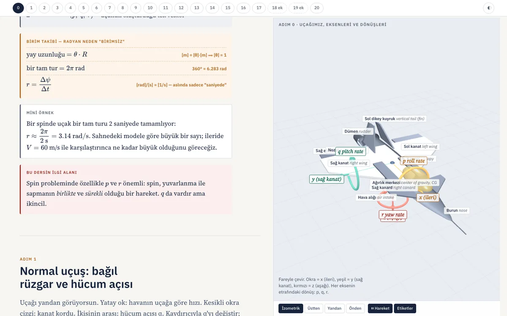

workshop
The working material behind the projects: what I derived by hand to understand a method, the scripts that ran it, the numbers that came out, and what I read along the way. Finished results live on the project pages; this is the bench they were built on.
Derivations and study notes
Statistical mechanics for molecular simulation · handwritten, 9 pages
From the kinetic theory of an ideal gas to the partition functions of the microcanonical, canonical and isothermal–isobaric ensembles: the background I worked through before running grand canonical Monte Carlo at NJIT.


Vortex dynamics and the fast multipole method · Denda Lab
| Biot–Savart from scratch | From divergence and curl to the Biot–Savart law and the induced velocity of a straight vortex segment, in fourteen steps |
|---|---|
| Polygon moments | Closed-form multipole moments of a polygonal vortex loop: notes · lemma derivation · slides |
| Quadrupole and octupole | The same recipe one and two orders higher: derivation · study notes · hand check · slides |
| Circles, ellipses, coupling | Intrinsic moments of smooth loops and the quadrupole coupling term: circle and ellipse · coupling term · slides |
| Ten-part FMM tutorial | The fast multipole method rebuilt from Greengard’s thesis in ten short chapters, each checked numerically |
| Explainer video | 1:40 animation of the polygon-moment result |
Aircraft spin aerodynamics · interactive lesson, in Turkish
Why predicting a spin needs a rotary-balance wind-tunnel test and not only the usual static derivatives, built up in 21 steps. Each step has its own 3D scene of one model jet in the browser, a symbol table, a units check, a worked number and a question, and the later steps derive the local angle of attack along the span and the strip-theory roll damping Clp = −CLα/6. I wrote it while teaching myself flight dynamics; the force curves in it are qualitative models that carry the argument, not data for a real aircraft.

Code and data
| Wake demonstration | Discrete-vortex wake with a quadtree multipole far field, running in the browser; the source is the page itself |
|---|---|
| run_gcmc_sweep.py | Parallel driver for the GCMC pore-size and wall-strength sweeps |
| argon_modulus.py | Fluctuation modulus of confined argon with block-averaged errors · csv |
| helium_isotherms.py | Helium density isotherms and equilibration trace · csv |
| Input decks | argon in a silica sphere · helium in a zirconium cavity |
| computational_chemistry | First Metropolis Monte Carlo codes, written to learn the method |
| EV-programs-BCC | CAN bus decoder and data logger for the electric truck (Arduino) |
Reading
Fast multipole methods and vortex dynamics
- L. Greengard, The Rapid Evaluation of Potential Fields in Particle Systems (MIT Press, Cambridge, MA, 1988). ISBN 978-0-262-57112-8.
- L. Greengard and V. Rokhlin, “A fast algorithm for particle simulations,” J. Comput. Phys. 73, 325–348 (1987). doi:10.1016/0021-9991(87)90140-9
Molecular simulation and statistical mechanics
- D. Frenkel and B. Smit, Understanding Molecular Simulation, 2nd ed. (Academic Press, 2002).
- M. P. Allen and D. J. Tildesley, Computer Simulation of Liquids, 2nd ed. (Oxford University Press, 2017).
- A. R. Leach, Molecular Modelling: Principles and Applications, 2nd ed. (Prentice Hall, 2001).
- R. Shankar, Fundamentals of Physics: Mechanics, Relativity, and Thermodynamics (Yale University Press, 2014).
- The papers behind the confined-fluid work are listed on the NJIT project page.
Nuclear engineering background
- J. R. Lamarsh and A. J. Baratta, Introduction to Nuclear Engineering, 3rd ed. (Prentice Hall, 2001).
- E. E. Lewis, Fundamentals of Nuclear Reactor Physics (Academic Press, 2008).